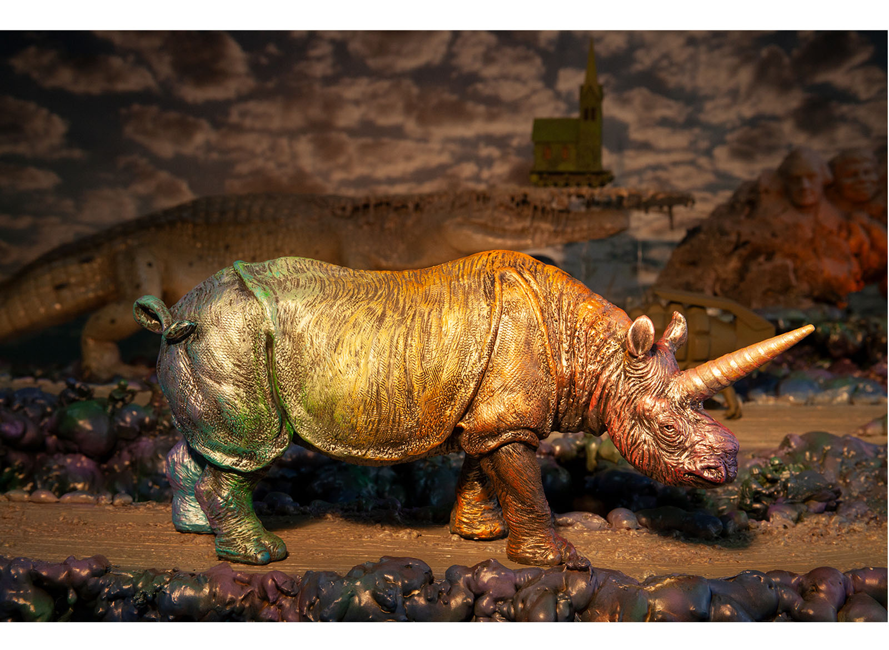
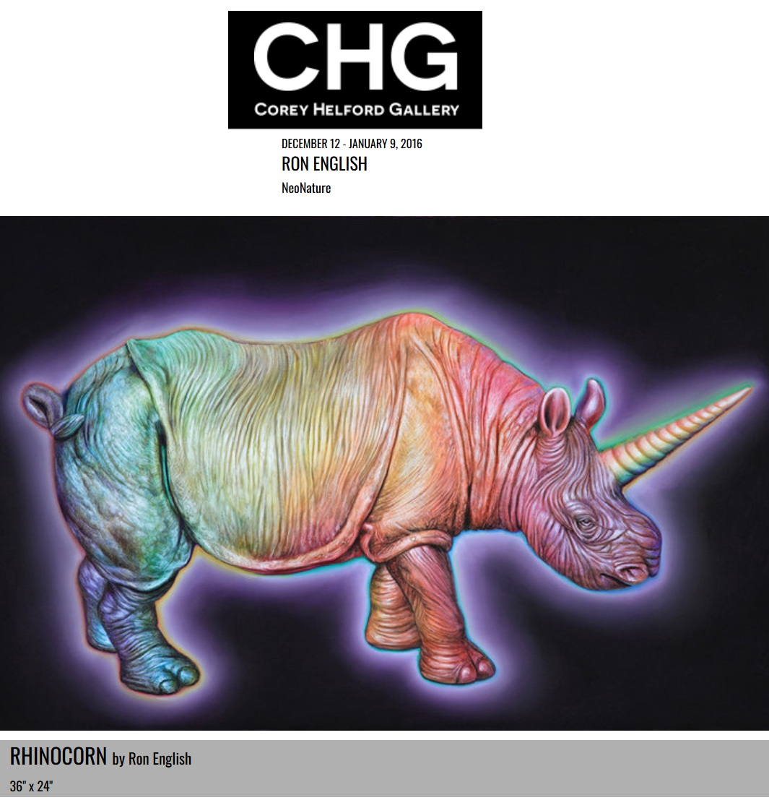
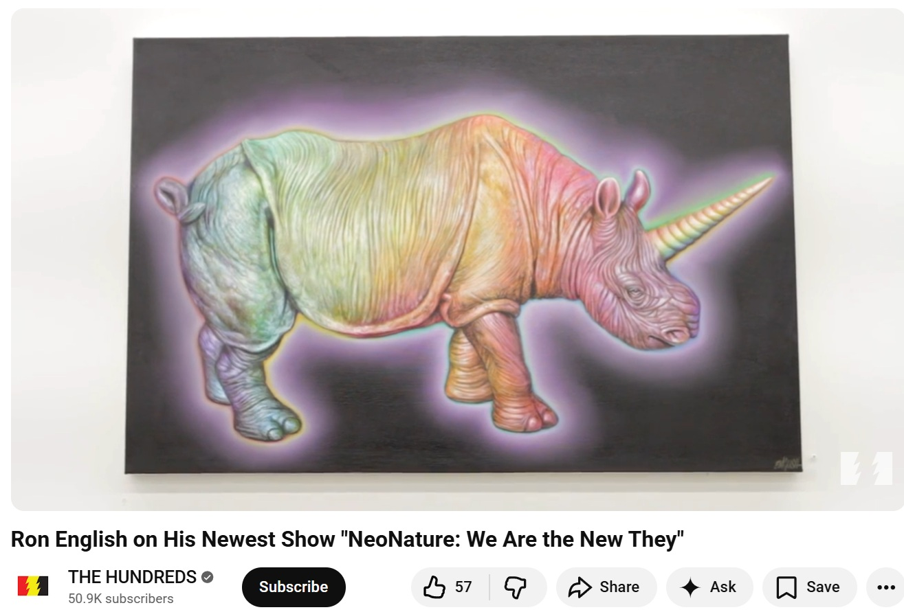
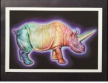

Exhibitions
Ron English NeoNature — We Are the New They, Corey Helford Gallery, Los Angeles, California, US, December 12, 2015–January 9, 2016.
Ron English NeoNature — We Are the New They, Corey Helford Gallery, Los Angeles, California, US, December 12, 2015–January 9, 2016.
Literature
Corey Helford Gallery, “Ron English "Neo Nature" at the new Corey Helford Gallery”, Juxtapoz, 2015.

Ancillary Documentation





